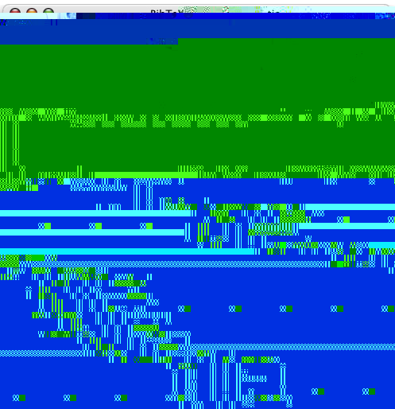
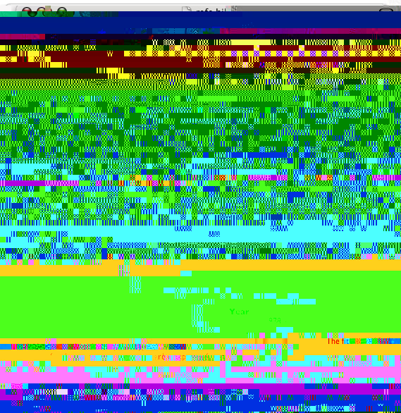
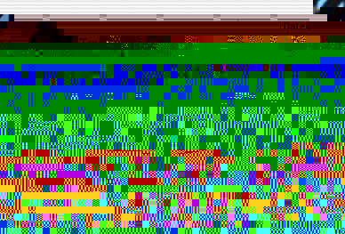
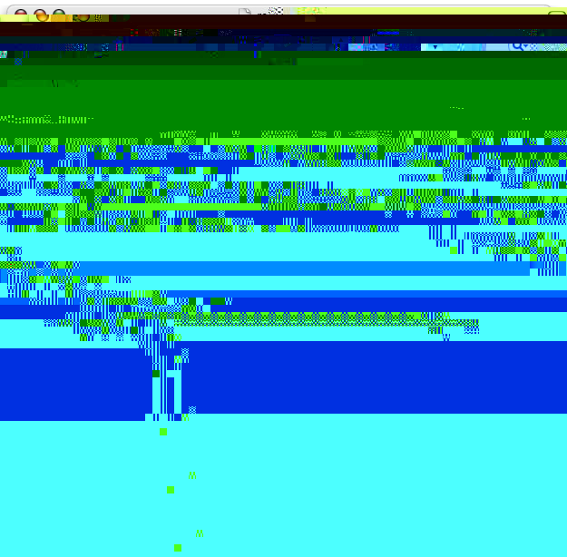

Managing references
Starting a new bibliography and adding references
Choose ‘New Bibliography’ from the File menu or type the keyboard shortcut ⌘⇧N. New references are added to the bibliography with ‘New Reference’ from the Bibliography menu or the keyboard shortcut ⌘N. This opens the Editor window, which looks something like:
You can then fill in the appropriate fields for your reference. The type pop-up menu lets you choose from the canonical BibTeX publication types (e.g., article, book, phdthesis). Field titles highlighted in red represent required fields for the chosen reference type (article in the case of the above screenshot). Fields can be added and removed with the plus and minus buttons to the right of the reference-type pop-up menu. BibDesk fills in fields as you type based on the information contained in other references. Also, BibDesk verifies that cite keys are unique before committing a reference to the bibliography.
Urls typed into the reference listing become active hyperlinks near the top of the Editor window. Dragging a file onto the Edit window adds the files location to the ‘Local-Url’ field and creates a clickable link to the file. Clicking in the box adjacent to ‘File:’ presents a file dialog for choosing the appropriate file. The ‘View in Drawer’ buttons show either the entire PDF file or the first page of the file as text, which can be copied and pasted into the publication's data fields.
The ‘Annote’ and ‘Abstract’ tabs provide access to larger text areas for these types of information. Rss-Description is covered in Exporting to RSS in this help file.
Closing the Edit window adds the reference to the bibliography. In Title view references are presented in a table, similar to this:
References can also be added to a bibliography by dragging an entry from a text source (text editor, web browser). Here's a fancy picture:
Below the table view is the Notes pane, which shows the contents of the highlighted reference. It can also be set (using the Display preferences) to show the entire selected entry as nicely formatted text. Switching to Author view from the pop-up menu presents an outline view of the references, arranged by author:
Note: The outline-view feature is experimental. Please save your data before evaluating it.
Editing references
Once references have been added to the bibliography, they can be edited by selecting a reference and choosing ‘Edit Reference’ from the Bibliography menu, typing ⌘E, or double-clicking the reference. When editing, changing pub type never loses information. In other words, if you put a booktitle in when it was inproceedings, and you change it to phdthesis, it will still have that booktitle.
Deleting references
References can be deleted by selecting the reference and choosing ‘Delete Reference’ from the Bibliography menu or pressing the delete key. Either way, a warning will appear to verify that you want to delete the reference.
Printing references
Choosing ‘Print’ from the File menu (⌘P) prints the contents of the lower browser pane of the selected reference.
Saving a bibliography
Save (⌘S) and Save As... (⌘⇧S) under the File menu will save your bibliography as a bib file.